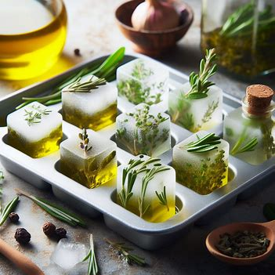
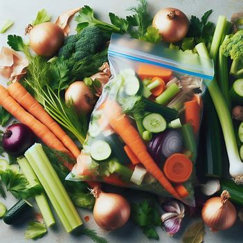

Welcome to our page dedicated to kitchen hacks! Here, you'll discover a treasure trove of tips and tricks designed to make your time in the kitchen more efficient, cost-effective, and enjoyable. Whether you're looking to save money on ingredients, streamline your cooking process to save time, or embark on fun and creative culinary projects, we've got you covered. From clever ways to repurpose leftovers to innovative techniques for maximizing flavor with minimal effort, our collection of kitchen hacks is sure to inspire you to get creative in the heart of your home. So, roll up your sleeves, sharpen your knives, and let's dive into a world of culinary creativity!
Frozen herbs

Freeze herbs in olive oil. If you have fresh herbs that you can’t use up in time, chop them up, place them in an ice cube tray, and pour olive oil over them. Freeze the tray, and whenever you need herbs for cooking, you can pop out a cube and add it directly to your pan. It’s a great way to preserve the herbs and add flavor to your dishes! 🌿🍳
Vegetable broth

When making soup or stew, instead of throwing away vegetable scraps like carrot tops, onion skins, and celery ends, save them in a freezer bag. Once the bag is full, use the scraps to make homemade vegetable broth. It's a great way to reduce food waste and add extra flavor to your dishes without spending extra money on store-bought broth.